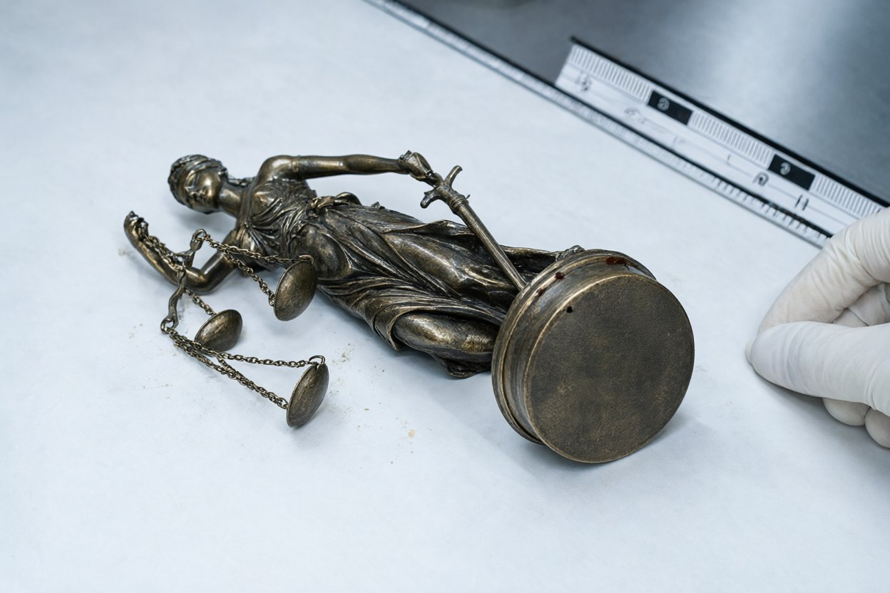

Підстава: постанова слідчого від 15.11.2024 про призначення комплексної експертизи речових доказів, вилучених під час обшуку 15.11.2024 (протокол обшуку, три місця).
Об'єкти дослідження:
Бурі плями на основі статуетки (заглиблення бортика) та на лівій манжеті пальта — кров людини. Генетичний профіль, виділений з обох об'єктів, ідентичний генетичному профілю Сенишина Андрія Васильовича (зразок — фрагмент тканини, відібраний під час судово-медичної експертизи 13.11.2024). Ймовірність збігу — понад 99,99 %.
На внутрішньому боці пелюшки виявлено потожирові сліди, для яких отримано генетичний профіль, що належить Гнатів Вікторії Олегівні (зразок добровільний, відібраний 15.11.2024).
Діаметр основи статуетки — 9,1 см. Форма та радіус кривизни бортика основи відповідають геометрії вдавленого перелому, описаного в протоколі судово-медичної експертизи (рана № 1, потилична ділянка, радіус кривизни вдавлення відповідає предмету з круглою гранню діаметром 8,5–9,5 см). Поверхня бортика має ушкодження від контакту з твердою, щільною тканиною; сліди на бортику відповідають ударній взаємодії. Пелюшка — медична, однорідна, без ознак механічного ушкодження, має сліди потоку рідини, що відповідають вологому зберіганню.

Смартфон Samsung Galaxy S23 досліджено в режимі копіювання без втручання в операційну систему. Журнал викликів за 12.11.2024 видалено із пам'яті пристрою о 23:08 12.11.2024 (фіксація подій: відкриття журналу викликів, видалення записів за день, підтверджено записами системного журналу). Відправлені SMS від 12.11.2024 о 23:05 (адресат: Сенишин Максим Андрійович) і о 23:07 (адресат: власний номер абонента Гнатів В.О.) збережені в розділі «Відправлені» і відновлені в повному обсязі. Відомості про вимкнення пристрою о 23:20 підтверджено журналом живлення.